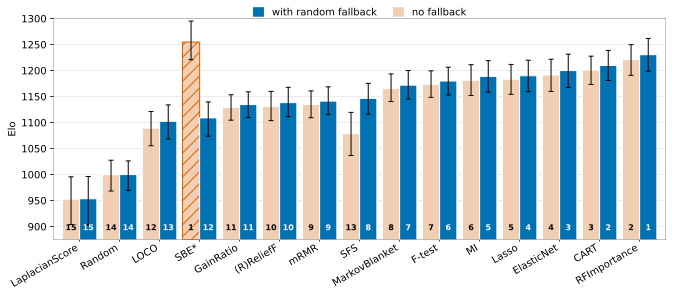

Which feature selection method should I use? SelectArena compares them on predictive performance, stability and validity. It is a living benchmark: your method can be added!
Elo Leaderboard
No results published yet.
Customize
Tasks
Model
Budget
No leaderboard for this selection: fewer than two methods have results.
Elo rating of each feature selection method, from worst to best. A
Bradley-Terry (see Chatbot Arena)
rating fit on pairwise matches: within each dataset, every combination of budget
and downstream model (errors averaged over splits) is a setting in which every pair of methods
plays a match, won by the lower downstream error; ties are skipped. Random is anchored at 1000
(dashed line), and a gap of 150 points means about 70% win probability. Error bars are 95%
intervals from cluster-bootstrap resamples of the datasets. The left bar of each method is
shaded by stability (how little the selected subset changes across
bootstrap resamples of the data), the right bar by validity (how well
injected noise features are rejected); darker is better for both. For details, see the Stability and
Validity tabs.
Leaderboard Table
Methods are compared within a comparison group: one dataset split, one downstream
model configuration and one feature budget. The selection is shared with the Performance Trade-offs tab.
Type: the method type following the paper's functional taxonomy (Appendix A)
Elo: rank by Elo, +/− give the 95% interval (Elo rating is explained under the figure above).
Improvement over Random: mean reduction of the downstream error compared with random
selection on the same dataset, in % (as in the Pareto figure in the Performance tab; Random is 0).
Stability and Validity: means over datasets and budgets,
shaded in blue and orange as the bars of the
Elo figure (darker is better); see their tabs.
Budgets: budget i of b keeps ceil(d · i / (b + 1))
of a dataset's d features when d ≤ 100, and ceil(d ^ (i / (b + 1)))
otherwise.
Time: median wall-clock time of the selection.
Fallback: share of runs in which the method ran out of time and random features filled the budget.
Each section opens with a click on its title.
No results published yet. The leaderboard fills in once the first benchmark
results are published from the
anonymized code repository.
Performance-Time Trade-Off
Customize
Tasks
Model
Budget
No leaderboard for this selection: fewer than two methods have results.
No Pareto front for this selection.
Predictive performance against selection time. Improvement of the
downstream model error over Random (%, higher is better) against the feature selection time per
1,000 features (log scale, left is faster), averaged over budgets, downstream models and
splits per dataset, then over datasets. Orange methods are on the Pareto front: no other
method is both faster and better. As in Figure 4 of the paper, Random (the
reference, 0%) and LaplacianScore (far below Random) are left out of the figure and its
Pareto front; their values are in the CSV.
Performance per Dataset Characteristic
Customize
Group by
Improvement over Random per group of datasets. Each cell is a method's
improvement of the downstream error over Random (%, as in the leaderboard): per dataset,
of the errors averaged over budgets, downstream models and splits, then averaged over the
datasets of the group. Darker is better, and the best method of each group is outlined.
All is the overall improvement, as in the leaderboard.
Group by splits the datasets by number of samples, number of features or samples
per feature (samples of the smallest class, or all samples for regression, per feature).
This and the following figures use all results, whatever is selected above.
Which methods gain or lose on larger datasets. Rank correlation
(Spearman) between a method's mean rank on a dataset and the dataset's number of samples,
number of features and samples per feature; positive values mean the method ranks
better on larger values. Lines are 95% bootstrap intervals over the datasets. Filled
dots mark a clear trend (the interval excludes 0): blue, better with more; orange, worse
with more.
Performance per Model
Improvement over Random per downstream model. For each method, the
improvement of the downstream error over Random (%, as in the leaderboard) with each
downstream model (markers) and with all of them (black bar). The grey line spans the
models, so a short line means the method helps every model about equally. The number
below the figure is the mean rank correlation (Spearman) between the method rankings of
every pair of downstream models; 1 means all models rank the methods the same. SBE and
LOCO, which judge features with a LightGBM model, help the linear model least.
Performance per Task Type
Improvement over Random per task type. As the figure per model, for binary
classification, multiclass classification and regression (markers) and for all of them
(black bar): the improvement of the downstream error over Random (%) of each method on the
datasets of each task type. The number below the figure is the mean rank correlation
(Spearman) between the method rankings of every pair of task types. The errors differ
between task types (ROC AUC, log-loss, RMSE), so compare the methods within a task type
rather than the size of the gains across task types.
Performance per Budget
Improvement over Random per feature budget. As the heat map per dataset
characteristic, with the budgets as groups: each cell is a method's improvement of the downstream
error over Random (%) at one feature budget, from 1 (the fewest selected features) to 5
(the most), and All over all budgets, as in the leaderboard. Darker is better, and
the best method of each budget is outlined. Improvements shrink at larger budgets for every
method, since Random's selection then holds most of the features.
Budget- and Time-constraint Ablations
Elo where no method ran out of time. Elo ratings on the datasets on which
every method finished within the 1-hour limit, so that no random fallback was needed
(orange), next to the default Elo ratings on all datasets (blue), with 95% intervals;
numbers on the bars are ranks, as in Figure D.3 of the paper. On these datasets, the
search method SBE is among the best methods, whereas it falls behind on the full
leaderboard, where it often runs out of time. Methods with preliminary results are
left out of this comparison, and the Elo ratings are computed without them.

Impact of random fallback on the Elo ranking (Figure D.3 of the paper). Elo
ratings recomputed from an ablation without random fallback on a single seed (orange) next to
the default Elo ratings (blue); numbers on the bars are ranks. SBE (striped) violates the
feature budget without fallback: when it runs out of time, it returns more features than
allowed, so its rise is an artifact. The meaningful change is the drop of SFS, which returns
too few features when it runs out of time.
Lasso and ElasticNet Without a Feature Budget
Performance of the regularization-based methods with and without a feature
budget. Lasso and ElasticNet rank features by the size of their coefficient and
keep the top k of the budget. Without a budget (orange), they keep exactly the
features with a non-zero coefficient. Each bar is the downstream performance relative to
the same model on all features (error on all features divided by error with the selected
features, ×100; 100% = all features, dashed line), averaged over datasets, with 95%
bootstrap intervals. The number on each bar is the number of features the method selected,
as the median across datasets: the budget size for budgets 1–5, and the number of
features with a non-zero coefficient without a budget.
One split (fold 0), default LightGBM and linear models, on 60 (Lasso) and 61 (ElasticNet)
datasets. Hover over a bar for its values;
download the values (CSV).
Why some datasets are not part of this comparison. On 7 datasets (8 for
Lasso), the regularization strength chosen by cross-validation sets all coefficients to zero,
so without a budget the method keeps no feature:
Imbalanced classification tasks (bad_customer_detection,
heart_disease_switzerland, thyroid_discordant, kdd_cup_09_appetency and, for Lasso,
porto_seguro, with 2–11% of samples in the minority class). For classification, the
regularization strength is chosen by cross-validated accuracy, the default of
scikit-learn’s LogisticRegressionCV. Predicting the majority class already
reaches the highest accuracy on these datasets, so no feature improves the criterion, and the
strongest regularization is selected.
Very few samples for many features (clock_protein_period and
clock_protein_toxicity, with 90 and 171 samples for more than 1,000 features).
Cross-validation finds no feature subset that reliably improves on the simplest model.
A weak signal (forest_fires, a regression task in which most fires burn
almost no area). LassoCV finds no feature that lowers the cross-validated
error.
With a feature budget, the methods still select the required number of features on these
datasets: the features are ranked by their coefficients, and the remaining places are filled in
the order of the columns. In addition, on leukemia_allaml, nci_ovarian_cancer and
prostate_cancer, a few features already separate the classes perfectly, and the downstream
models reach zero error (a ROC AUC of 1) with all features or with a selection. A relative
performance cannot be computed there.
Method
Model
Budget
Performance (%)
95% interval
Median (%)
Selected features (median)
Datasets
Lasso
Linear
1
72.7
65.3–80.4
77.0
4
60
Lasso
Linear
2
85.3
79.2–91.2
89.9
8
60
Lasso
Linear
3
94.3
88.3–101.3
96.1
12.5
60
Lasso
Linear
4
98.1
94.1–102.4
98.0
21
60
Lasso
Linear
5
99.6
96.3–103.0
99.5
26.5
60
Lasso
Linear
none (non-zero coefficients)
100.0
96.8–103.4
100.0
27
60
Lasso
LightGBM
1
68.7
60.6–77.8
67.6
4
60
Lasso
LightGBM
2
81.6
75.0–88.4
85.8
8
60
Lasso
LightGBM
3
89.8
84.2–95.1
93.2
12.5
60
Lasso
LightGBM
4
95.1
90.7–99.3
97.2
21
60
Lasso
LightGBM
5
97.0
93.0–101.0
99.2
26.5
60
Lasso
LightGBM
none (non-zero coefficients)
98.6
95.5–101.8
100.0
27
60
ElasticNet
Linear
1
76.2
68.9–83.7
82.0
4
61
ElasticNet
Linear
2
85.7
79.8–91.1
89.9
8
61
ElasticNet
Linear
3
95.2
90.0–101.3
95.5
13
61
ElasticNet
Linear
4
100.6
93.9–110.3
97.9
22
61
ElasticNet
Linear
5
99.5
96.8–102.5
99.4
28
61
ElasticNet
Linear
none (non-zero coefficients)
99.9
98.4–101.5
100.0
30
61
ElasticNet
LightGBM
1
72.0
63.8–79.9
70.1
4
61
ElasticNet
LightGBM
2
82.8
75.5–90.4
86.8
8
61
ElasticNet
LightGBM
3
88.8
83.9–93.7
91.9
13
61
ElasticNet
LightGBM
4
94.1
89.8–98.2
96.3
22
61
ElasticNet
LightGBM
5
96.1
93.2–98.5
99.2
28
61
ElasticNet
LightGBM
none (non-zero coefficients)
99.2
97.6–100.6
100.0
30
61
Complete Results
The results behind the leaderboard, for all task types, downstream models and budgets:
one row per dataset, feature selection method, downstream model and budget, averaged over the
splits (All features is the downstream model without feature selection). Filter, sort and
download the rows you need, or get all of them as results.csv.
Stability
No stability results published yet.
Customize
Tasks
View
Stability per method and events per variable. Stability is whether a method selects similar features for similar data,
measured with the Nogueira metric (Nogueira & Brown, 2016)
across bootstrap resamples.
Each column is a dataset,
placed by its events per variable (EPV: samples of the smallest class, or all samples for
regression, per feature; datasets with few samples per feature are on the right). A cell is
the method's mean stability over the budgets; methods are sorted by their mean, most stable
on top. Top-3 outlined marks the three most stable methods per EPV; Within 0.03
of the best shows only the methods at most 0.03 below the best one.
Mean stability per method and budget
Validity
No validity results published yet.
Customize
Noise
Tasks
View
Validity per method and events per variable. Validity is the share of original features that are selected after uninformative Gaussian noise
features are added, as in prior work
(Cherepanova et al., 2023;
Guyon et al., 2007). The noise level is the share of noise
features in relation to the number of original features.
Each column is a dataset,
placed by its events per variable (EPV: samples of the smallest class, or all samples for
regression, per original feature). A cell is the method's mean validity over the budgets;
methods are sorted by their mean, most valid on top. Top-3 outlined marks the three
best methods per EPV; Within 0.03 of the best shows only the methods at most 0.03
below the best one.